快速上手YOLO：利用 Roboflow 和 Ultralytics HUB 完成模型訓練與管理(上)
https://medium.com/@andy6804tw/%E5%BF%AB%E9%80%9F%E4%B8%8A%E6%89%8Byolo-%E5%88%A9%E7%94%A8-roboflow-%E5%92%8C-ultralytics-hub-%E5%AE%8C%E6%88%90%E6%A8%A1%E5%9E%8B%E8%A8%93%E7%B7%B4%E8%88%87%E7%AE%A1%E7%90%86-%E4%B8%8A-37acd110a8a0
在訓練人工智慧模型時，我們通常會選擇在自己的電腦或工作站上進行。然而，許多人可能會嘗試利用雲端運算工具，例如 Colab 進行訓練。但是使用過 Colab 的人都知道，訓練過程可能會變得複雜且不易管理，且檔案分散難以整理。因此，在本文中我們將介紹如何利用 Ultralytics HUB 來協助我們進行模型訓練和管理。我們將透過數據管理平台 Roboflow，將資料匯入 Ultralytics HUB，並連動 Colab 進行模型訓練。同時 Ultralytics HUB 平台提供了視覺化圖表，方便我們觀察和分析訓練過程中的各項指標。
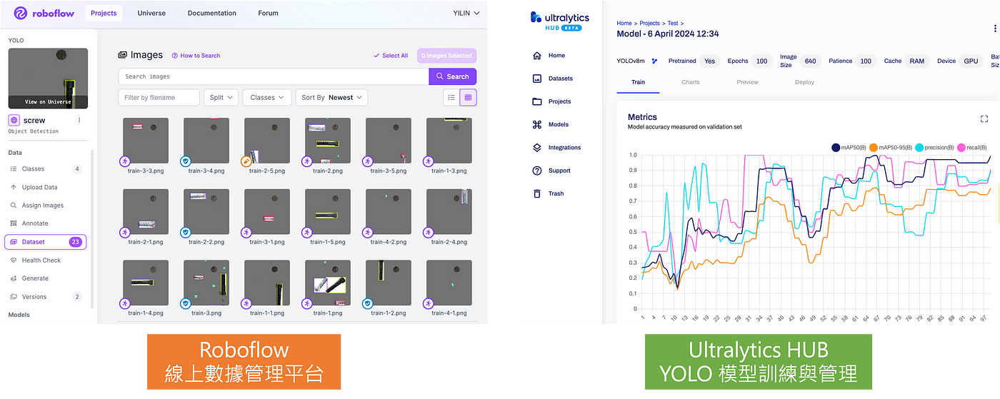
Roboflow 線上數據管理平台
Roboflow 是一個專門管理影像數據的平台，目標是幫助使用者更有效地管理和處理圖像數據。它的主要功能包括數據標註、數據清理、數據轉換和數據管理。使用者可以透過 Roboflow 快速標註圖像，進行數據增強和轉換，並輕鬆地將準備好的數據集用於模型訓練。除了數據管理之外，Roboflow 平台還提供了許多不同用戶所公開的資料集。這些資料集涵蓋了各種不同的主題和應用領域，包括物件偵測、影像分割和分類等。使用者可以透過 Roboflow 平台輕鬆地瀏覽這些資料集，找到符合自己需求的資料，並加速他們的研究和開發過程。
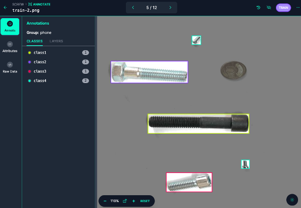
數據集功能：
- 數據導入與導出：Roboflow支持多種數據導入和導出選項，包括CSV、COCO、Pascal VOC、YOLO、TensorFlow等。這使得從其他平台導入數據到Roboflow變得輕鬆，或導出數據以供其他工具和框架使用。
- 數據集管理：Roboflow讓管理數據集變得輕鬆，具有版本控制、數據驗證和數據過濾等功能。還可以合併數據集、刪除重複數據等。
- 數據增強：Roboflow包含各種數據增強技術，幫助提高模型的準確性。可以對圖像添加噪聲、模糊、裁剪、旋轉、翻轉等技術。
影像標註功能：
- 物件檢測：使用Roboflow，可以對圖像進行物件檢測的標註，並在物件周圍畫出邊界框並為其標記類別名稱。Roboflow支持多種標註類型，包括點、線和多邊形。
- 圖像分割：圖像分割是Roboflow支持的另一種標註任務，可以將圖像中的每個像素都標記為一個類別名稱。這對於語義分割和實例分割等任務很有用。
- 分類：Roboflow還支持圖像分類任務，可以根據其內容將圖像分類到不同的類別中。
- 標註工具：Roboflow包含多種標註工具，以使標註過程更快速、高效。這些工具包括自動標註，其中Roboflow根據現有標註提出標註建議，以及AI標註，其中Roboflow根據圖像內容提出標註建議。
- 協作標註：Roboflow還包括協作功能，您可以邀請其他人標註您的數據集或審查標註。這使得在大型數據集上工作或與他人合作進行標註任務變得輕鬆。
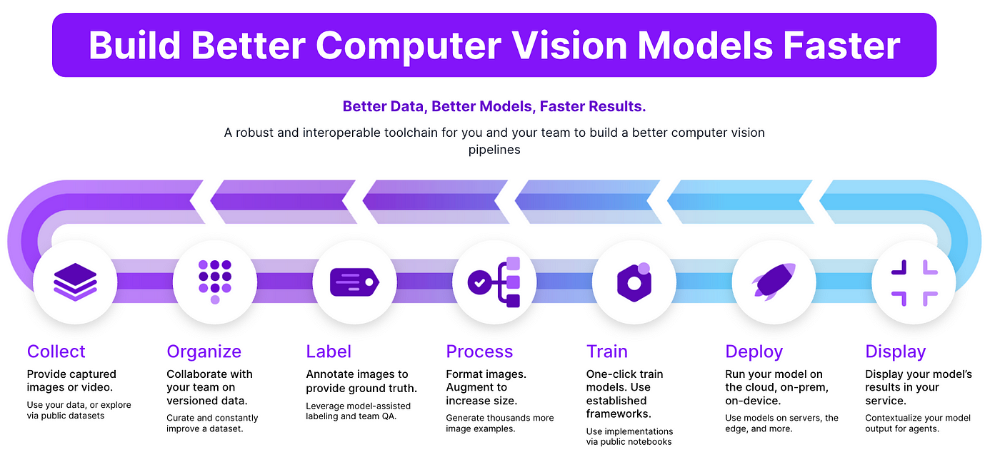
Roboflow 平台的使用非常直觀且易於上手。以下是使用 Roboflow 平台的基本步驟：
- 註冊帳號
- 建立新專案
- 上傳數據
- 標記數據
- 導出數據集
完成註冊後，請登入 Roboflow。首先，平台會要求建立一個 Workspace，然後選擇使用免費版本的 Public Plan 方案。
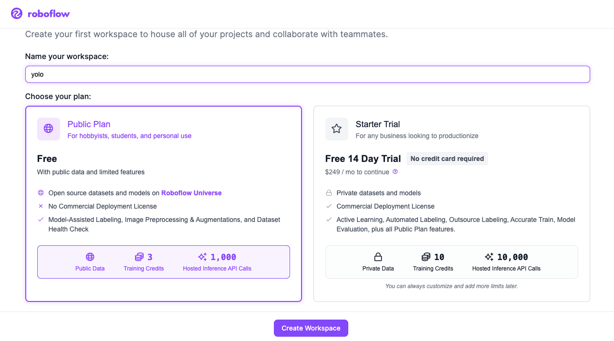
成功建立一個Workspace後才能夠在該空間中新增一個專案。
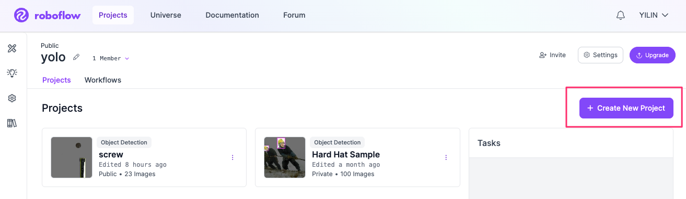
該平台提供了四種專案類型，分別是物件檢測（Object Detection）、分類（Classification）、實例分割（Instance Segmentation）和特徵點檢測（Keypoint Detection）。在這裡，我們選擇第一個物件檢測專案。
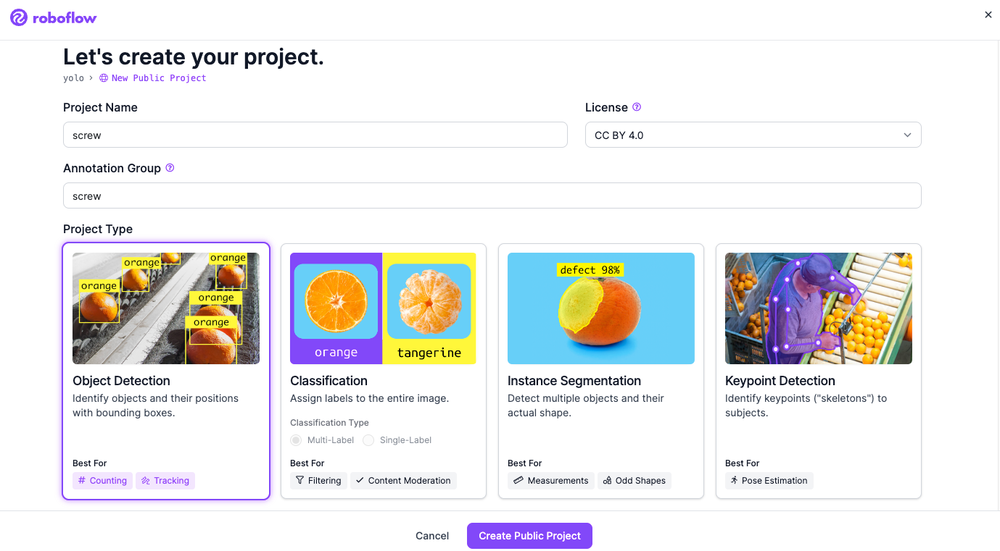
在左側工具列提供了許多數據管理選項，包括標籤的命名管理、影像上傳、指派影像標註任務、資料集匯出管理。最後 Roboflow 還提供了強大的視覺化工具和分析功能，幫助使用者了解數據集的特徵和統計訊息，使更好地維護資料品質。首先我們先將手上的資料集上傳到該專案中，上傳成功後點選 Save and Continue 按鈕。
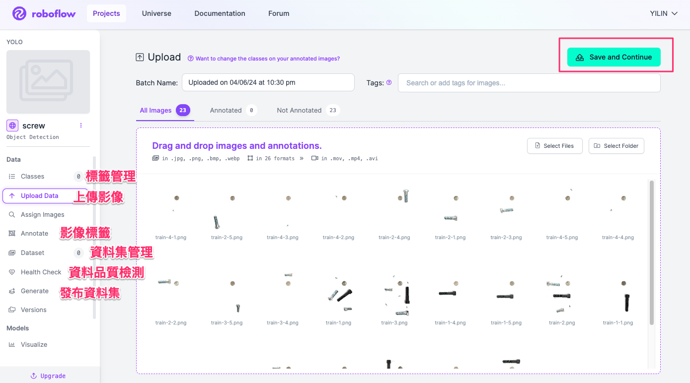
接著系統會指引你下個步驟，在 Roboflow 服務中提供了三種資料標籤的流程。免費的用戶可以直接選第三個擇手動標籤選項。並且可以指派其他使用者一起對這個專案進行協同標籤的任務。
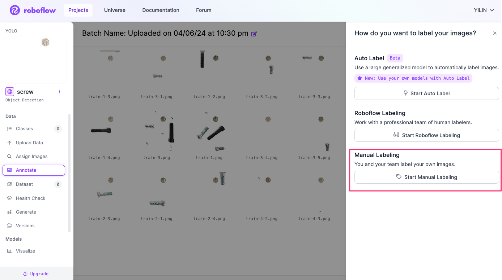
點選 Start Annotation 即可進入標籤頁面進行人工標籤。
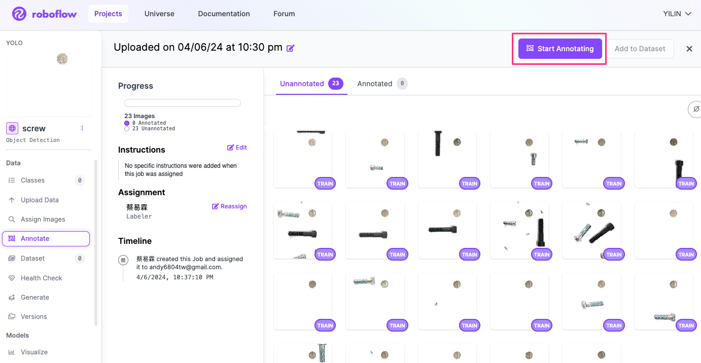
編輯頁面有點類似修圖軟體，首先針對想要預測的物體用 bounding box 圍起來，同時每個圍好的框必須都給予一個正確的類別。
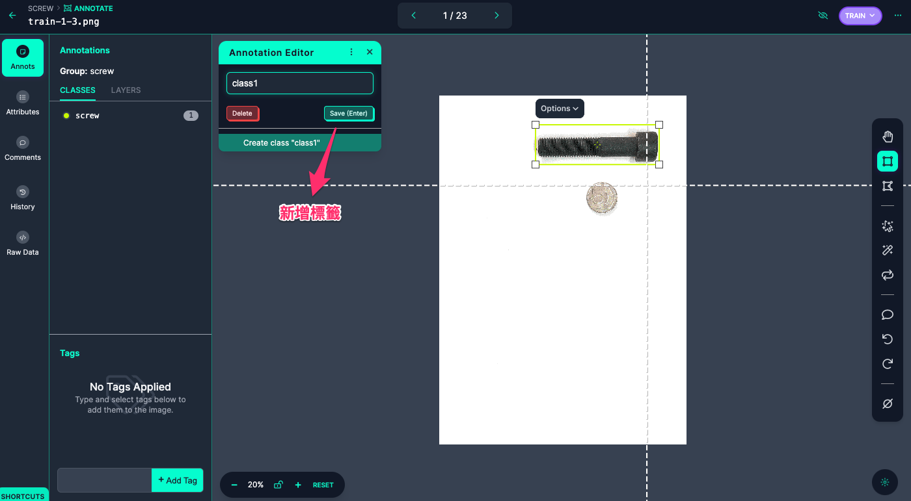
每個類別標籤顏色都可以對應到 bounding box 框框的顏色，讓用戶可以一眼就知道物件的相對應類別。
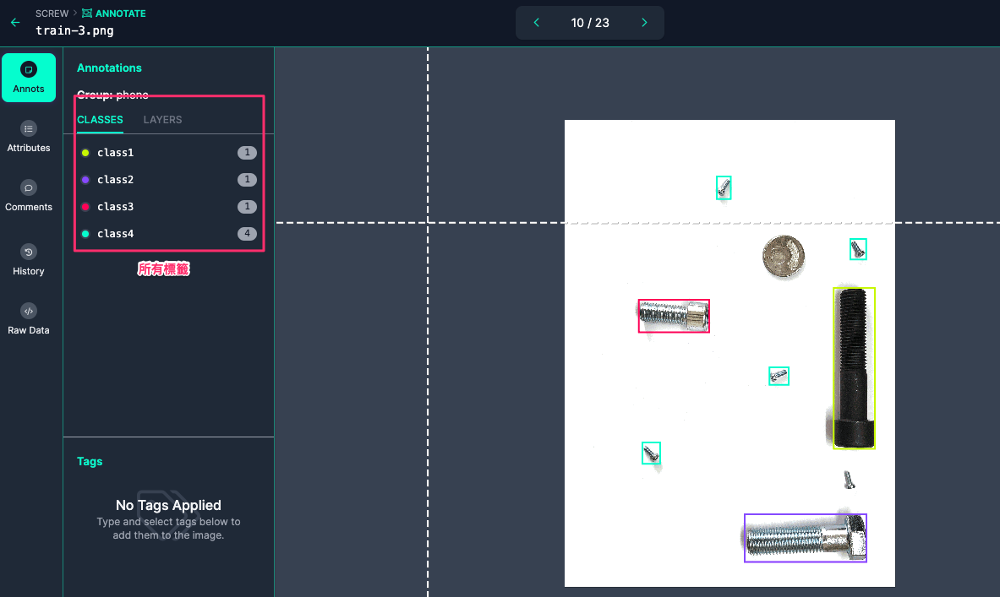
全部影像都標籤完成後即可點選 Add images to Dataset，並選擇比例自動切割訓練集、驗證集、測試集。
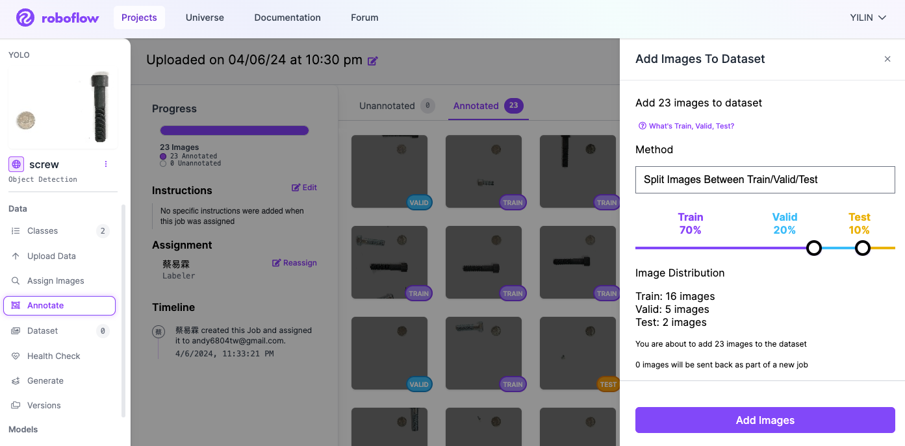
這時候就可以看到剛剛所切分的資料集在左側的 Dataset 選項中。
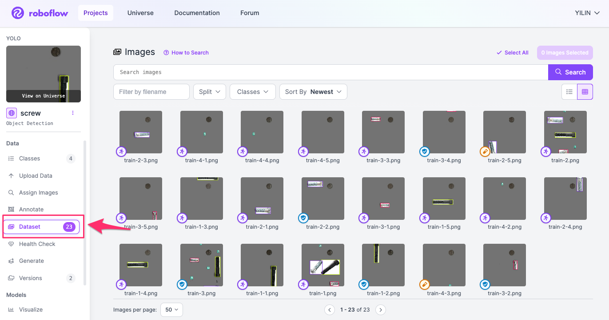
完成影像標記後，即可發布第一版本的資料集。點選左側工具列的 Generate 即可發布目前的資料集。發布過程分為以下五個步驟：
- 選擇數據來源: 確認要發布的影像數量以及類別個數。
- 切分資料集: 按照自己的偏好將數據切分為訓練集、驗證集和測試集。
- 影像前處理: 總共分成十一種影像的預處理方法，可依照偏好添加。
- 資料增強: 讓原本資料集隨機的產生不一樣的樣本使模型學到更豐富的資料，根據增強方式分成影像層級增強和邊界框層級增強。
- 建立與發佈
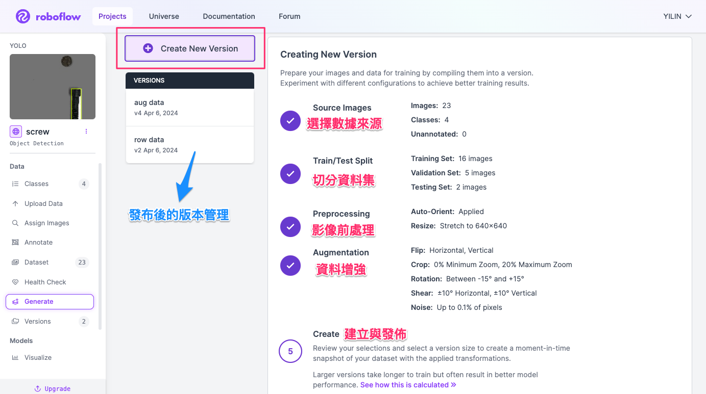
成功建立版本後即可點選 Export Dataset 按鈕匯出資料集。Roboflow 支援了許多不同的標註格式，例如JSON、TXT、XML等。並且可以直接將整包資料集匯出下載，或是可以直接利用 Roboflow API 的方式透過 Python 連結帳戶直接下載資料集與標籤。
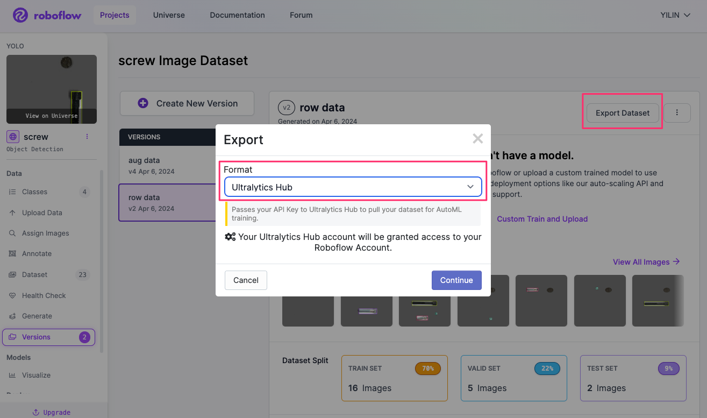
選擇 Train with Roboflow，可以直接使用內建的自動線上建模服務，一個帳號能免費使用一次模型訓練。
如果想快速實現免費的線上無程式碼自動建模服務，可以參考下一篇文章。我們將介紹如何通過 Roboflow 與 Ultralytics HUB 進行連動，並利用 Colab 快速進行物件偵測模型的訓練。
快速上手YOLO：利用 Roboflow 和 Ultralytics HUB 完成模型訓練與管理(下)
在上一篇教學中我們已經透過數據管理平台 Roboflow 為資料集進行標籤管理。並整理好訓練用的訓練集與測試集。資料整理好之後，最後一步是透過 Roboflow 匯出資料集至 Ultralytics HUB。在匯入之前記得先註冊好 Ultralytics HUB 會員並登入。另外也可以從 Roboflow Universe 上找尋社群提供的免費公開資料集。
選擇 Ultralytics HUB 進行匯出，網頁將自動轉跳到 Ultralytics HUB 網站，登入後即可在 Ultralytics HUB 管理和訓練模型。
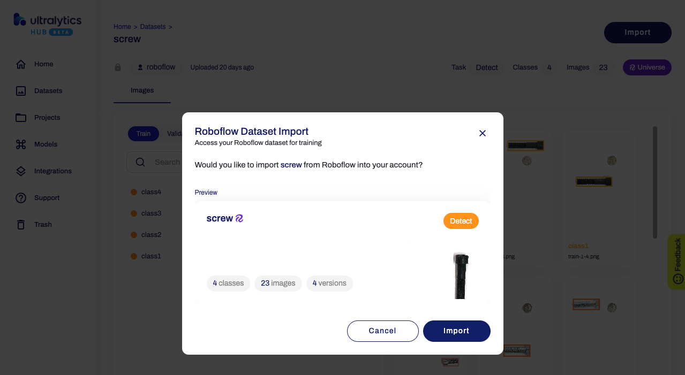
成功匯入(Import) 資料集之後即可，點選 Train Model 進行模型訓練。
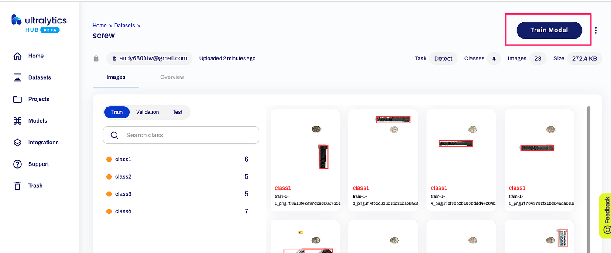
Ultralytics HUB 提供了廣泛的 YOLO 系列模型訓練平台，讓用戶可以輕鬆地訓練多種不同版本的YOLO（You Only Look Once）物件偵測模型。此平台不僅提供了豐富的訓練資源，還提供預訓練模型，使得用戶能夠更快速地開始物件偵測任務，大幅縮短了模型開發和部署的時間。Ultralytics 公司發布了 Yolov5 和 Yolov8，雖然未發表論文對技術上說明。但是這一套 No Code 系統大幅降低了對物件辨識任務的上手難度。我們可以在該平台選擇 YOLOv5 或 YOLOv8 不同大小的模型架構，並且選擇是否要使用預訓練模型。此外進階設定還能動態調整模型的超參數。
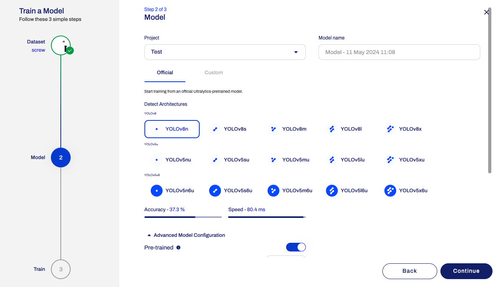
模型選擇好之後依據平台指示將上面三行程式碼貼到下方提供的 Colab 專案內執行即可。
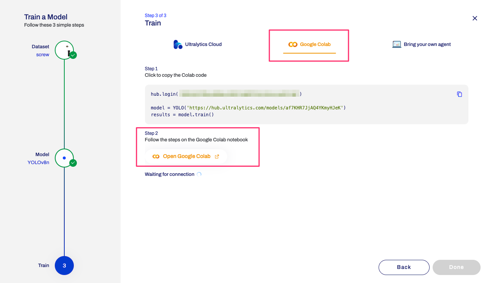
程式會先安裝一些必要的套件，然後會連接至 Ultralytics HUB。接著，它會將在 Colab 中訓練得到的結果傳送回 Ultralytics HUB。
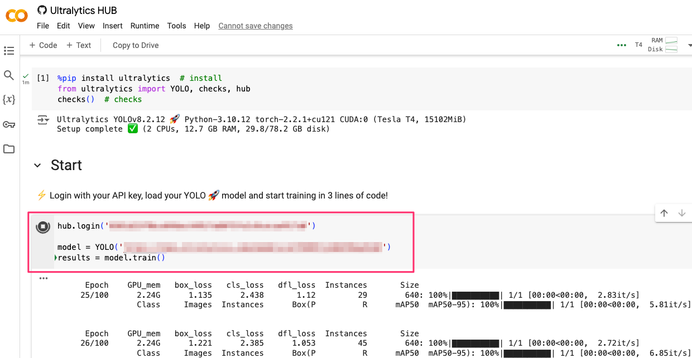
訓練過程中可以透過 Ultralytics HUB 即時地監控模型收斂情形。在本範例中訓練集共有16張影像 ，並且有四種不同類別，在 Colab Tesla T4 GPU 訓練 100 個 epoch 大約花費兩分鐘。
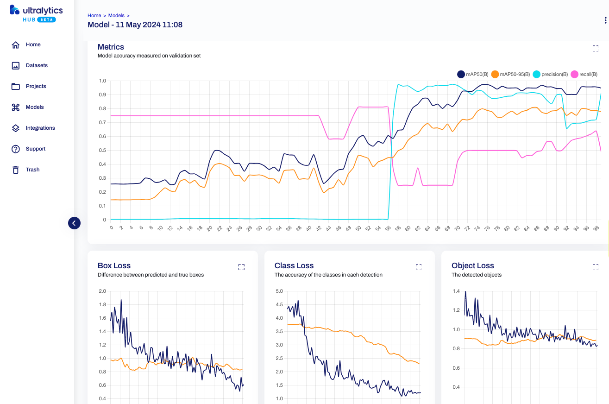
模型訓練完成後可以直接在平台上進行線上的預覽(Preview)推論，驗證模型訓練的成果。可以使用圖片上傳方式亦或是開啟電腦視訊鏡頭進行物件偵測。此外部署(Deploy)功能可以直接將模型打包匯出，例如 ONNX 格式。
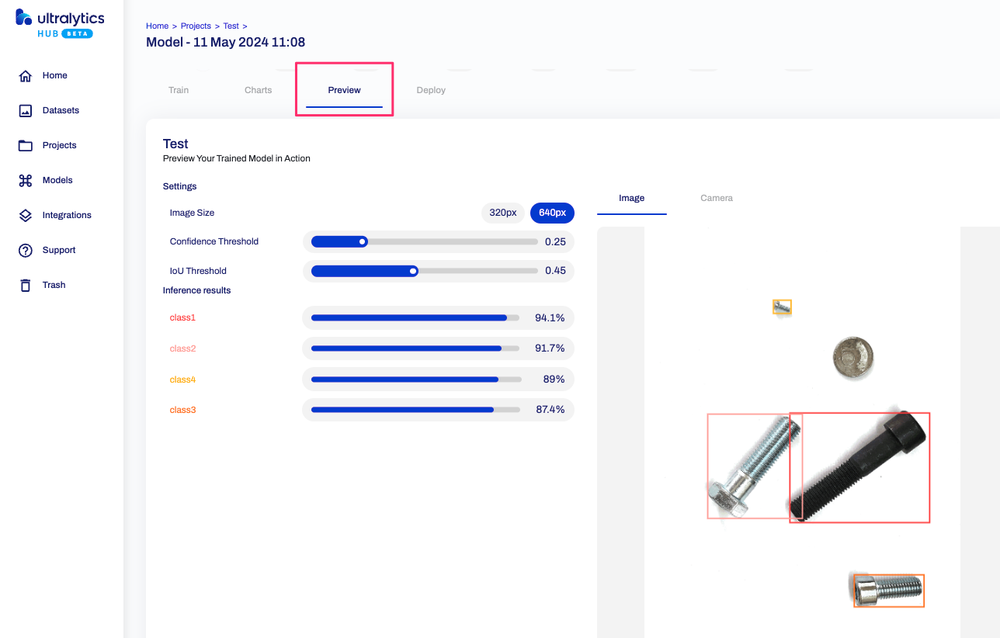
另外平台也提供了 Ultralytics Cloud API 方法，使用者可以透過 Python 呼叫已訓練好的模型並透過 HTTP Request POST 協議進行圖片上傳並回傳辨識結果。
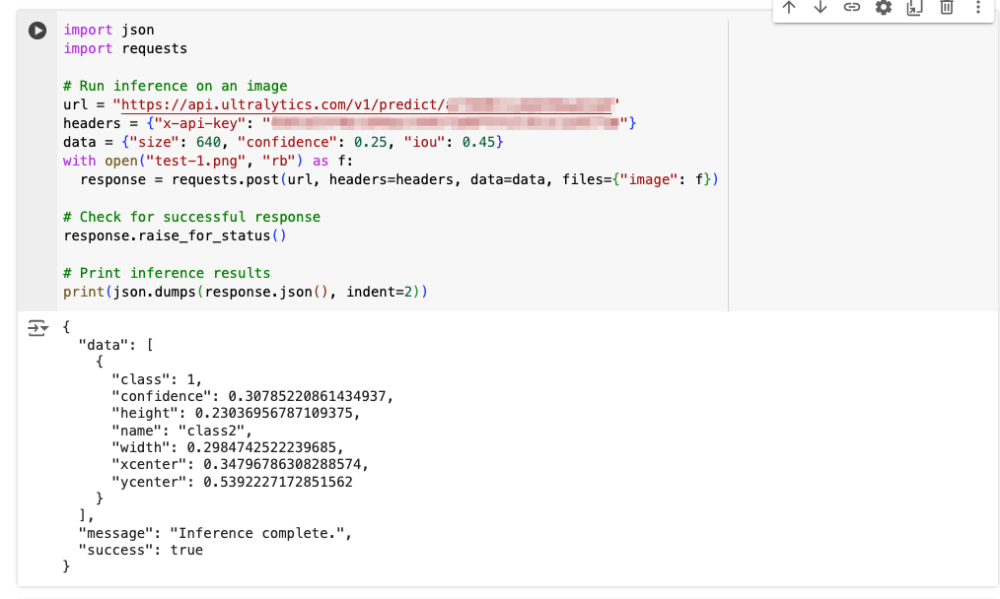
還記得 Roboflow 這個平台嗎？雖然他的 No Code 模型訓練服務要錢，但是他有免費提供自己訓練好的模型上傳至它們平台。並且依樣提供雲端API服務進行推論。有興趣的讀者可以期待下篇文章，教各位如何訓練 2024 最新的 Yolov9 並透過 Roboflow 管理模型。
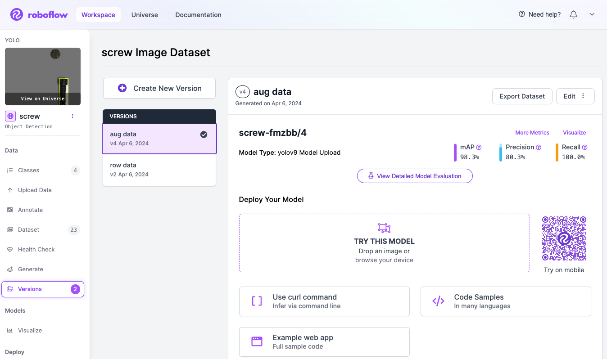